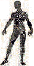

Looking Again
Shortly after this long-overdue conscious commitment to learn of the Heavenly Messiah, an angel visited me with the message, "Ask what thou wilt, and I will give it thee." Without forethought, my immediate answer was, "I want you!" I wasn't even sure with whom I was speaking; but my prayer was soon to be answered, nonetheless. Praise hla! It had not been given to me to ask to be given unto Wisdom: wisdom is justified by her children (Matt. 11:19), but we are called to be children of the Living God (Luke 10:21). Although Wisdom is an attribute of myhla, divine Wisdom is of a different order, altogether, than human wisdom (1 Cor. 1:25; 3:18-19).
Many wonderful things began happening, then, in a very short period of time. Perhaps these events were what Paul meant by the teaching in 2 Corinthians 12:4. Before they began to happen to me, however, I had declared in prayer that the Father was well aware of my inability to keep silent about trivial matters-- let alone to safeguard secrets; and that I therefore charged him to withhold from me things that he wished me not to noise abroad, as I had proven myself repeatedly to be unable to exercise my will for good, despite my continually good intentions (Rom. 7). My ignorance was nearly epic (Matt. 10:27).
HaShem hwhy has great pity for us all, and is full of tender mercy (James 5:11). I drank from heavenly cups; heavenly vials were emptied into my soul; angels in the name of Jesus Christ fed me the Bread of Life on a fork made of Spirit; the precious, spiritual blood of Yahushúa was sprinkled into my being; I saw great books without pages, whose "letters" were formless Spirit moving across vast spaces as I read without understanding a single word. I was touched in the inward man by a finger of purest Light. He who speaks with the voice of many waters spoke to me twice. He who speaks without voice, writing His messages with Light in visions perceived upon the soul, began speaking with me continually (John 5:37), each message conveying in an instantaneous flash things that would require volumes to recount.

I was visited by an angel I offended by my sanctimony, which reminded me of humility; and I was freed of a powerful spell of witchcraft that had been upon me for many years, without my knowing anything about it, which reminded me of David's faith. Not every event of this period was so clearly beneficial: disobeying, at one point, in a matter that was senseless to what remained of my carnal mind, a crystal-like globe containing an evil spirit was hurled into my soul from Heaven, charged with instructing me concerning my willfulness (1 Sam. 16:14). I briefly lived with the messenger without complaint; and, when I was delivered from its badgering upon acknowledging the importance of obedience to God's voice above understanding of his will when he has taken explicit care to instruct you (of all people) directly, the buffeting spirit screamed as it ascended into the realms from which it had come.Most astounding of all to one such as me, I learned the mystery of the bridal chamber, becoming thereby a true brother to my honored elder, Y'shúa. Adam Kadmon had no more place in my thoughts than the pillow you left this morning has in yours, when I became One with the Angel of the Presence of formless HaShem, first projected as Yahushua into the heart and mind of the true and faithful witness, Y'shua, whose life on Earth manifested the glory Yahushua had within the Father before the worlds began. My subconscious joy was a scarlet thread within my conscious shame.
"Great is
hwhy, and greatly to be praised in the city of our God, in the mountain of
his holiness. Beautiful for situation, the joy of the whole earth, is mount Zion, on the sides of the north, the city of the great King"
(Ps. 48:1-2): Tipareth; Emanation Six; Beauty on the Tree of Life called Adam Kadmon: a mystery both revealed and magnified symbolically within the Crown Diamond of the believers' Tree of Life.
Wrestling with angels just beyond consciousness, I arose with upon the magic carpet of the kundalini to the third heaven; and a new dimension of a very familiar struggle resumed. My meditations had previously centered on the righteousness of Elohim. I had wanted to understand what HaShem is doing on Earth, that I might understand, coming to the place where I could truly praise him without ignorant fear of judgment. Now, however, persuaded that-- at some point-- something extraordinary might be required of me because of the revelations, I began to have shameful concern about my own lack of righteousness, convinced that God had, inexplicably, made some kind of mistake in designating me for some yet-unspecified work.
Parting the hoof with less-than-perfect faith, I again began to focus partly on the spiritual righteousness of hla and partly on my own, worldly progress toward a personal understanding of that standard (Matt. 8:22-24; 2 Thess. 2:7). Earthly progress attends spiritual progress; but when one tries to make of it the measurement of spiritual maturation, the standard is blurred, defying measurement; for whatsoever is not of faith is sin (Rom. 14:23), no matter what garments it presents to the eyes of man.
One thing was certain: I would embarrass God sooner or later, bringing the cross of Mashiyach to an open shame (Heb. 6:6)! It was not, exactly, that I feared myself falling away-- every day brought, and yet brings at this editing, new evidence of his mercy and favor, as also of his chastisement and judgment (Rev. 3:19)! Rather, it was that I imagined myself to have been unduly double-promoted, as it were; and that the enlightenment, if it had indeed come (by virtue of my Paul-like incursion into heavenly realms), had infiltrated inaccessible portions of the mind of a man who was consciously unprepared for its responsibilities,
As I re-read this yet again, I recall the admonition, "Have I been so long time with you, and yet hast thou not known me?" Yea, Kúrios; for eternity shall barely suffice to teach any of your great majesty. Strengthen our unbelief; and give us joy in your burden of Light. You are faithful in all things, and have answered before we called: being, Yourself, the strength needed for the completion of your great work among us.
To resume my testimony, then: the journey in my study of Adam Kadmon had progressed from Sphere Nine to Sphere Six, having begun, somewhat unusually, at Sphere Ten some years before I had even heard of such a symbol. I'd finally caught up with myself; for when the symbol first appeared before me on a piece of paper, I saw that my study had begun not at Malkuth, as I imagined, but at Tipareth, Sphere Six. That was its true beginning in fact, if not in consciousness. Shaking off my slumber, it was clear that the way from Sphere Six along the center path appeared to lead, directly, to Sphere One-- to the Supreme Crown, or Kether. How does one proceed?! He does not. The way is opened to him, or it is not; and Da'at, a swamp of knowledge, tugs at the heels of those who would walk from Six to One at their own initiative.

| Jacob's Ladder | ||
|
site |
j |
book |